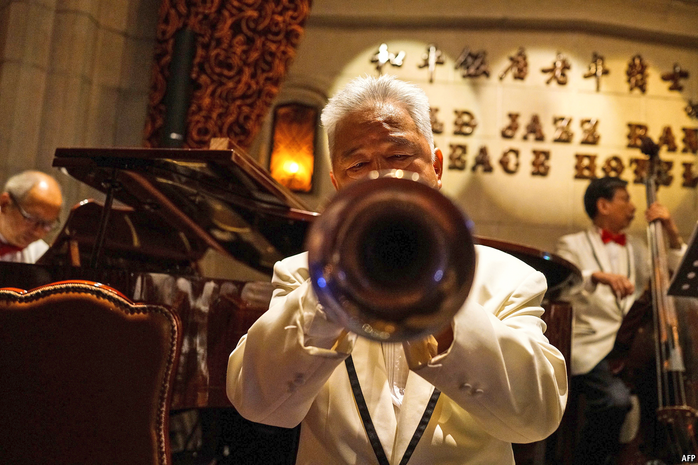

2020-12-22T11:12:15+00:00
Chinese hoteliers
中国的酒店业者
中國的酒店業者
Hospitable climate
氛围宜人
氛圍宜人
Two hotel groups thrive amid their industry’s pandemic malaise
行业因疫情普遍萎靡之时，两家酒店集团却蓬勃发展
行業因疫情普遍萎靡之時，兩家酒店集團卻蓬勃發展
COVID-19 HAS, received wisdom has it, been terrible for hotels. The share prices of the eight biggest listed Western groups by room count have slipped by 14%, on average, this year. The glum consensus is, though, being challenged by two big Chinese chains. Both are enjoying resurgent demand for domestic travel as China has tamed its epidemic. And strength at home is fuelling ambitions abroad.
新冠疫情对酒店来说很糟糕，这是普遍看法。西方客房数量排名前八的上市酒店集团的股价今年平均下滑了14%。不过，这一悲观的共识正受到中国两家大型连锁酒店的挑战。中国的疫情已经得到遏制，这两家连锁酒店正从人们对国内游的需求回升中获益。而国内业务强劲也助推了向外扩张的雄心。
新冠疫情對酒店來說很糟糕，這是普遍看法。西方客房數量排名前八的上市酒店集團的股價今年平均下滑了14%。不過，這一悲觀的共識正受到中國兩家大型連鎖酒店的挑戰。中國的疫情已經得到遏制，這兩家連鎖酒店正從人們對國內游的需求回升中獲益。而國內業務強勁也助推了向外擴張的雄心。
Jin Jiang, the world’s second-biggest hotel firm by capacity, boasted an occupancy rate of 74% in the third quarter, in line with last year and more than double that of its bigger rival, Marriott International. Its market value has soared by three-quarters this year, to $6.4bn, above better-known Asian brands such as Shangri-La and Mandarin Oriental. Huazhu, which like Jin Jiang is based in Shanghai, saw revenue per available room recover by 40% from the second quarter, to 179 yuan ($27). The group is now worth $16bn, behind only Marriott and Hilton Worldwide among the world’s listed hoteliers.
按客房数量计算，锦江是全球第二大酒店集团，今年第三季度的入住率为74%，与去年持平，是比它更大的竞争对手万豪国际集团的两倍多。今年它的市值飙升了四分之三，达到64亿美元，高于香格里拉和文华东方等更知名的亚洲品牌。华住酒店集团和锦江一样总部位于上海，它的可出租客房平均收入较第二季度回升了40%，达到179元。该集团目前的市值为160亿美元，在全球上市酒店集团中仅次于万豪和希尔顿。
按客房數量計算，錦江是全球第二大酒店集團，今年第三季度的入住率為74%，與去年持平，是比它更大的競爭對手萬豪國際集團的兩倍多。今年它的市值飆升了四分之三，達到64億美元，高於香格里拉和文華東方等更知名的亞洲品牌。華住酒店集團和錦江一樣總部位於上海，它的可出租客房平均收入較第二季度回升了40%，達到179元。該集團目前的市值為160億美元，在全球上市酒店集團中僅次於萬豪和希爾頓。
Similarly to their big Western rivals, Jin Jiang and Huazhu each owns a portfolio of brands that cater to different customers. Jin Jiang, which is controlled by Shanghai’s local government, operates everything from budget digs (think Marriott’s Fairfield Inn) to the upper end of the mass market (like Sheraton). Huazhu is a more all-encompassing group, which also competes in the luxury segment. Both companies prefer to offload the costs of hotel construction to franchisees in exchange for lower franchise fees, which enables them to expand much more rapidly.
与西方大型竞争对手类似，锦江和华住都有一系列品牌来适应不同客户的需求。锦江由上海市政府控股，经营范围涵盖从经济型酒店（类似万豪的万枫酒店）到大众市场的高端酒店（类似喜来登）。华住更加包罗万象，还参与豪华酒店市场的竞争。两家公司都倾向让加盟店承担酒店的建设成本而回馈以更低的特许经营费用，这使得它们的扩张速度大幅提升。
與西方大型競爭對手類似，錦江和華住都有一系列品牌來適應不同客戶的需求。錦江由上海市政府控股，經營範圍涵蓋從經濟型酒店（類似萬豪的萬楓酒店）到大眾市場的高端酒店（類似喜來登）。華住更加包羅萬象，還參與豪華酒店市場的競爭。兩家公司都傾向讓加盟店承擔酒店的建設成本而回饋以更低的特許經營費用，這使得它們的擴張速度大幅提升。
The pair indeed look poised to capture a greater market share at home, reckons Yulin Zhong of 86Research. In America chain hotels accounted for 72% of all hotel rooms at the end of 2019. In China the equivalent figure was just 27%.
八六证券研究（86Research）的钟玉林（音译）认为，这两家公司看起来的确将会占据更大的国内市场份额。在美国，截至2019年底，连锁酒店占所有酒店客房数量的72%。在中国这一数字仅为27%。
八六證券研究（86Research）的鐘玉林（音譯）認為，這兩家公司看起來的確將會佔據更大的國內市場份額。在美國，截至2019年底，連鎖酒店占所有酒店客房數量的72%。在中國這一數字僅為27%。
As incomes rise and Chinese travellers become more discerning, the standardised, dependable amenities and good service that big chains guarantee begin to look more appealing. Domestic providers of such things enjoy a substantial first-mover advantage. The number of hotel rooms in China held by Wyndham, the biggest foreign operator, is merely a third that of Huazhu and a fifth that of Jin Jiang. And their advantage is growing—the two firms have more than 7,300 hotels under development between them, mostly in China, equivalent to 47% of their existing stock.
随着民众收入增加，以及中国游客变得更不好糊弄，在大型连锁酒店有保证的标准化的、可靠的设施和良好服务开始越发显现吸引力。而国内的供应商享有巨大的先发优势。中国最大的外资酒店运营商温德姆（Wyndham）在这里拥有的客房数量仅为华住的三分之一、锦江的五分之一。它们的优势还在增强——这两大集团共有7300多家在建酒店，相当于它们现有存量的47%，其中大部分在中国。
隨着民眾收入增加，以及中國遊客變得更不好糊弄，在大型連鎖酒店有保證的標準化的、可靠的設施和良好服務開始越發顯現吸引力。而國內的供應商享有巨大的先發優勢。中國最大的外資酒店運營商溫德姆（Wyndham）在這裡擁有的客房數量僅為華住的三分之一、錦江的五分之一。它們的優勢還在增強——這兩大集團共有7300多家在建酒店，相當於它們現有存量的47%，其中大部分在中國。
In a bid to break into the global market, two years ago Jin Jiang purchased a majority stake in Radisson, the world’s 11th-biggest hotel operator by capacity, for $332m. In January Huazhu paid $868m for Deutsche Hospitality, a posh German group. Such tie-ups allow the new owners to study the nuances of serving a sophisticated foreign clientele without spending millions on marketing their unfamiliar brands in the West (or raising the sort of hackles that Chinese acquisitions often do in more sensitive industries such as technology or finance). As American and European hoteliers continue to reel amid the pandemic’s second wave, more last-minute deals may be on offer for the Shanghai duo. ■
为了打入全球市场，锦江两年前斥资3.32亿美元收购了丽笙酒店（Radisson）的多数股权。按客房数量计算，丽笙是全球第11大运营商。今年1月，华住以8.68亿美元收购了德国豪华酒店集团德意志酒店（Deutsche Hospitality）。通过这样的联手合作，新东家可以学习为成熟的外国客户服务的微妙之处，还不用花数百万美元在西方营销自己不出名的品牌（也不会像中国企业在科技或金融等更敏感的行业里发动收购那样引发怒火）。美国和欧洲的酒店经营者仍在第二波疫情中挣扎，上海这两大集团也许能捡到更多最后一分钟特价房。
為了打入全球市場，錦江兩年前斥資3.32億美元收購了麗笙酒店（Radisson）的多數股權。按客房數量計算，麗笙是全球第11大運營商。今年1月，華住以8.68億美元收購了德國豪華酒店集團德意志酒店（Deutsche Hospitality）。通過這樣的聯手合作，新東家可以學習為成熟的外國客戶服務的微妙之處，還不用花數百萬美元在西方營銷自己不出名的品牌（也不會像中國企業在科技或金融等更敏感的行業里發動收購那樣引發怒火）。美國和歐洲的酒店經營者仍在第二波疫情中掙扎，上海這兩大集團也許能撿到更多最後一分鐘特價房。